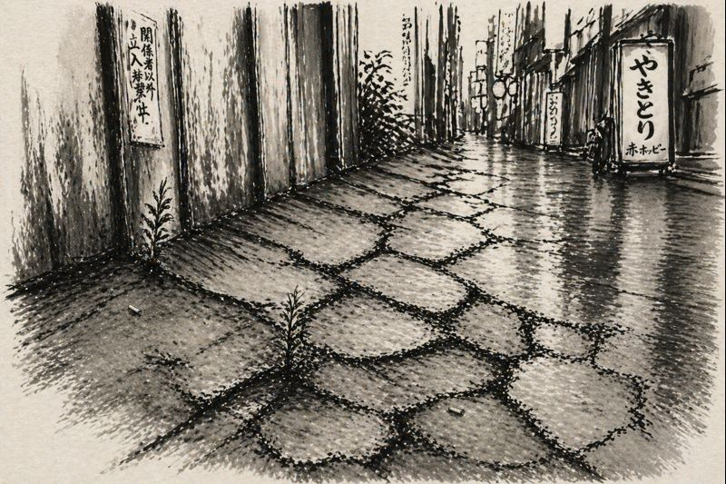

A Road Well-Traveled
Not empty.
Stone.
Ash in cracks.
Debris named.
Order imagined.
Nothing asks.
Breath.
Fire.
Drop.
No witness.
Still here.

Step.
Step.
Step.
No walker.
Path only.
Thought.
Thought.
Trace.
Self—another mark.
Mark erasing mark.
Cleaning is more ash.
What clears the ground
that is not ground?
Pause.
Light in stone.
A plant.
Paper to dust.
Nothing removed.
Nothing added.
No mistake.
No fixer.
Worn ground.
Complete.
Even this is extra.